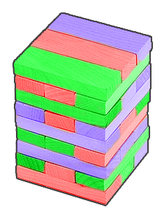

有一个单人游戏。一开始有一个 层的塔，每层有三个位置，初始每层每个位置各放一个红色、绿色或者蓝色的木板。
有一个六面色子，掷出每个面的概率相等，六个面分别是绿、绿、蓝、蓝、红、黑颜色的。
连续投掷色子直至塔无法继续抽取木板。若投掷出黑色，就不进行任何操作；否则，选择一块相应颜色的木板，放到塔的顶层（若顶层未填满，则必须先放在没有放木板的位置上，否则放在最顶层的上面一层三个位置中的任意一个）；若无法取出一个投掷出颜色的木板，也不进行任何操作。
每次抽取木板必须满足以下条件：
抽取木板所在层非顶层；
抽取后该层中间位置有木板或者两边位置都有木板。
现在给定一个塔的初始局面，求：在操作者争取掷骰子次数最少的情况下，游戏结束时，掷骰子的期望次数。
Cold winter evenings in Tomsk are very boring — nobody wants be on the streets at such a time. Residents of Tomsk while away the time sitting in warm apartments, inventing a lot of different games. One of such games is 'Colored Jenga'.
This game requires wooden blocks of three colors: red, green and blue. A tower of levels is made from them. Each level consists of three wooden blocks. The blocks in each level can be of arbitrary colors, but they are always located close and parallel to each other. An example of such a tower is shown in the figure.

The game is played by exactly one person. Every minute a player throws a special dice which has six sides. Two sides of the dice are green, two are blue, one is red and one is black. The dice shows each side equiprobably.
If the dice shows red, green or blue, the player must take any block of this color out of the tower at this minute so that the tower doesn't fall. If this is not possible, the player waits until the end of the minute, without touching the tower. He also has to wait until the end of the minute without touching the tower if the dice shows the black side. It is not allowed to take blocks from the top level of the tower (whether it is completed or not).
Once a player got a block out, he must put it on the top of the tower so as to form a new level or finish the upper level consisting of previously placed blocks. The newly constructed levels should have all the same properties as the initial levels. If the upper level is not completed, starting the new level is prohibited.
For the tower not to fall, in each of the levels except for the top, there should be at least one block. Moreover, if at some of these levels there is exactly one block left and this block is not the middle block, the tower falls.
The game ends at the moment when there is no block in the tower that you can take out so that the tower doesn't fall.
Here is a wonderful game invented by the residents of the city of Tomsk. I wonder for how many minutes can the game last if the player acts optimally well? If a player acts optimally well, then at any moment he tries to choose the block he takes out so as to minimize the expected number of the game duration.
Your task is to write a program that determines the expected number of the desired amount of minutes.
The first line of the input contains the only integer ( ) — the number of levels in the tower.
Then lines follow, describing the levels of the tower from the bottom to the top (the first line is the top of the tower). Each level is described by three characters, the first and the third of them set the border blocks of the level and the second one is the middle block. The character that describes the block has one of the following values R (a red block), G (a green block) and B (a blue block).
In the only line of the output print the sought mathematical expectation value. The answer will be considered correct if its relative or absolute error doesn't exceed .
6
RGB
GRG
BBB
GGR
BRG
BRB
17.119213696601992